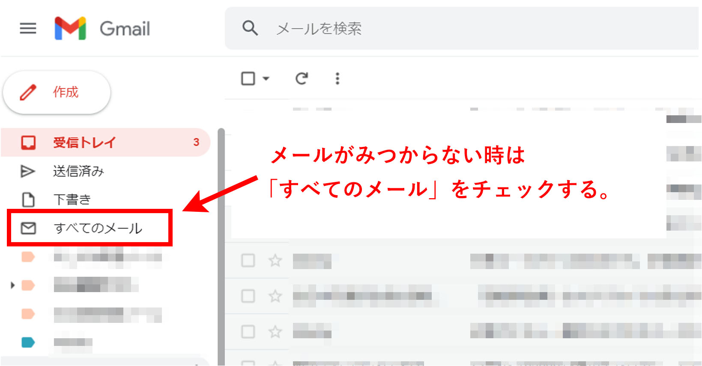
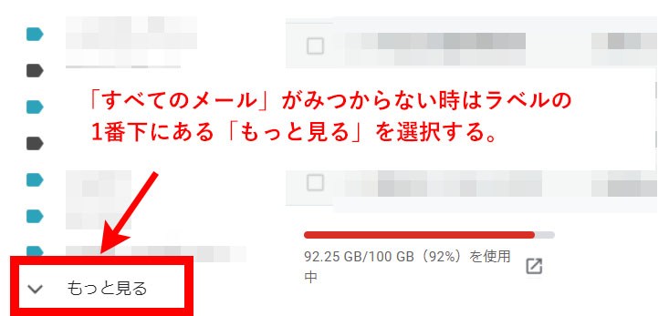
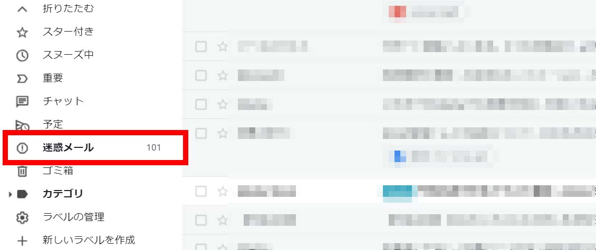
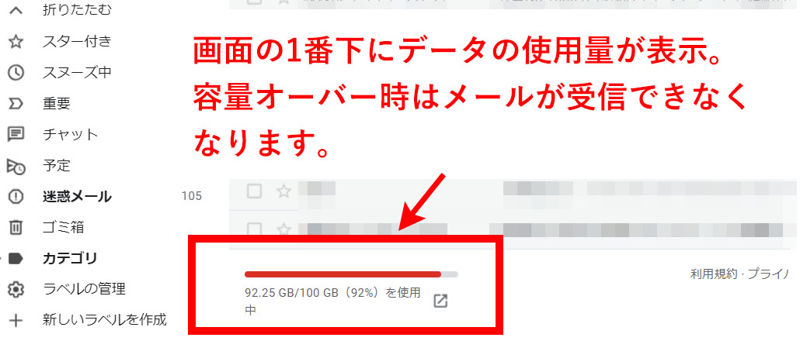
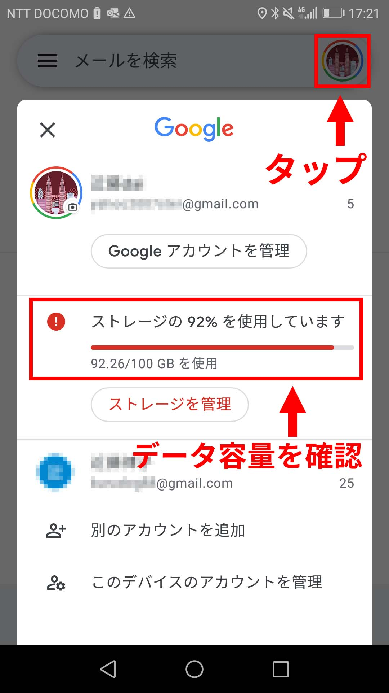

記事編集：7月17日
本来届くはずのメールが受信トレイに届かない。このようにメールが受信できない場合の対方方法について説明をします。

まず最初に行って欲しいことは「すべてのメール」フォルダを確認することになります。
「すべてのメール」ではその名前の通り、ほぼすべてのメールを確認することが出来ます。 メールの振分け設定をしていて他のフォルダにメールが振り分けられていても、すべてのメールでは振分けされたメールも見ることが出来ます。 アーカイブされたメールも入っています。
そのため、「すべてのメール」を確認することで大抵のメールが探せます。

Gmailの設定状況によっては、この「すべてのメール」のラベルが見つかりづらい時があります。そんな時はラベル列の1番下にある「もっと見る」をクリックして下さい。
「もっと見る」には「迷惑メール」「新しいラベルの作成」といった様々なラベルが隠されています。ここに「すべてのメール」が隠れている場合もあります。
基本的にGmailでメールを探す時には、最初に「すべてのメール」を確認する。という癖をつけていた方が良いでしょう。
すべてのメールを確認したがメールが届いていない。そんな時、次に確認して欲しいのが「迷惑メール」ラベルになります。

Gmailではその仕様上「すべてのメール」であっても、迷惑メールに入ってしまっているものは表示されません。
どう考えても迷惑メールではないという宛先からのメールでも念のため確認しておきましょう。 私自身、受信されているはずのメールが見つからず何故か「迷惑メール」ラベルに届いていたことが何回かあります。
私の場合、メールが届いていない問題の9割方はこの2つのフォルダを探すことで解決しました。
その次に確認して欲しいのがGmailのデータ容量になります。
Gmailはアカウントを作成した際に15GBの容量が付与されますが、オンラインストレージであるGoogleドライブに入っている動画やフォトなどのデータや、資料系ソフトのデータ容量も 合算して計算され、15GBを超えるとGmailが受信できなくなります。
そのため、もし個別メールだけが届かないのではなく、他のメールも合わせて受信ができていない場合（長い間まったく受信がないなど）であれば、 データ容量をオーバーしている問題の可能性があります。
データ容量はPC版であれば、管理画面の1番下（メール受信欄の下）に表示されますので確認してみましょう。
もしデータが容量を超えていたら、Googleドライブのデータ整理、もしくはGmailのメールデータの整理を行いましょう。 容量の空きができればメールが受信できるようになります。


またプランのグレードアップで月額250円を支払えば15GBから100GB以上に増やすことも出来ます。
「すべてのメール」にもない「迷惑メール」にもない。データ容量も問題ない。そんな時は1回Gmailを再起動してみましょう。
PC版であれば更新ボタンを選択します。スマホ版であれば一旦アプリを閉じて、もう一度立上げてください。
再起動させた後にもう一度、メールが届いていないか調べてみましょう。
Gmail側の不具合でメールが届いていない可能性もあります。
Gmailであってもトラブルが発生して数時間以上、メールが止まってしまったことは過去に何回かあります。
まったくメールが受信できない状態で、容量や再起動をしても入ってこなければTwitterなどでGmailの状況を調べてみましょう。
また、Googleステータス ダッシュボードでも稼働状況を確認することができます。
Gmailアプリを立ち上げてもまったく受信できない場合、 Wifiに繋がっていない可能性もあります。
ブラウザでWebサイトが開けるか、スマホアプリでニュースサイトが読めるかなど 他のソフトも起動させてみましょう。
他のソフトが起動しない場合はWifiの接続問題が起こっているかもしれません。Wifiの再接続を行ってください。
demiglaze
Web制作を始めて約19年になります（HTML/css、Photoshop、Webマーケティング）。2005年から当サイトの運営を開始。 これまでに300個以上のドメインを取得、10社を超えるレンタルサーバーを利用してきました。